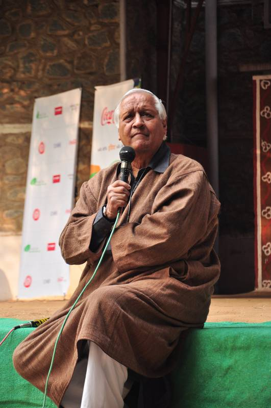

맨발 대학 설립자 벙커 로이 별세, 향년 81세

1972년 인도 틸로니아에 센터를 세워 시골 여성에게 태양광 설치·정비 교육, 2016년 본인 기고 기준 78개국 800여 명 훈련
인도 사회운동가 산지트 '벙커' 로이가 11월 10일 오전 6시 15분 라자스탄주 틸로니아의 자택에서 별세했다. 향년 81세다. 유족 측 성명은 아내인 활동가 아루나 로이 등이 곁을 지킨 가운데 평온하게 숨졌다고 전했다. 사망 원인은 알려지지 않았다.
로이는 1972년 틸로니아에 사회사업연구센터를 세웠고, 이곳은 맨발 대학으로 불렸다. 태양광과 물 보전, 교육, 보건, 생계 사업을 시골 여성 중심으로 꾸렸고, 낮에 학교에 가지 못하는 아이들을 위한 야간학교도 열었다. 태양광 분야에서는 학교에 다닌 적 없는 여성이 틸로니아에서 교육을 마치고 고향 마을로 돌아가 조명 설비를 설치하고 운영하고 정비했다.
로이는 India Perspectives 2016년 9~10월호 기고에서 이 교육의 얼개를 직접 적었다. 교육생은 글을 모르거나 반쯤 아는 35~50세 여성이고, 과정은 6개월이다. 이들은 마을마다 두는 시골 전자 작업장(수리와 부품 조립을 맡는 작은 공방)에서 고장 수리를 맡았고, 주민은 등유·양초·건전지·휴대전화 충전·땔감·경유에 쓰던 돈과 같은 금액을 매달 조명 요금으로 냈다. 같은 글은 인도 기술경제협력(ITEC) 교육 16차례로 78개국 여성 800명 넘게 훈련했고, 이들이 가구 5만 곳과 마을 500곳 넘게 전기를 넣었다고 적었다. 맨발 대학은 2008년 ITEC 교육기관으로 인정받았다.
출처: National Herald 2026-11-10 NH Digital(기자 미표기) 원문 보기
출처: 인도 유엔대표부 게재 India Perspectives 2016년 9~10월호 2016-10 벙커 로이 기고 「The Barefoot Solar Mamas of the world」 원문 보기